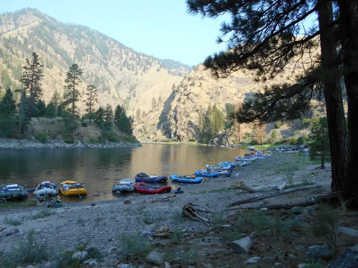
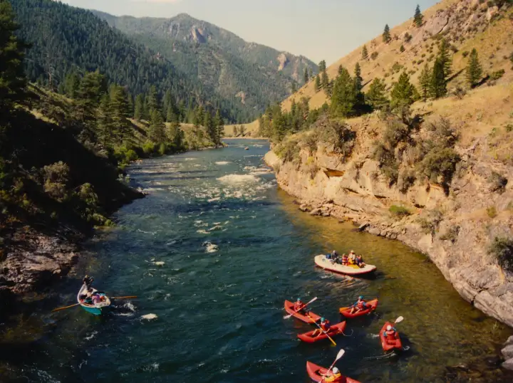
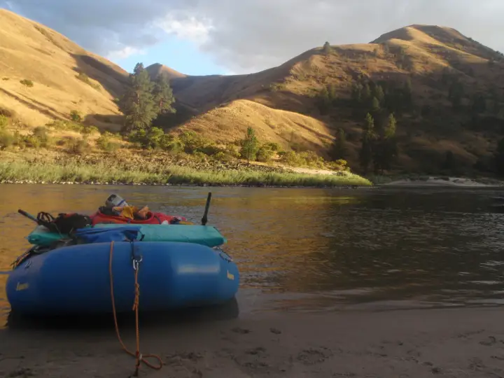

Main Salmon — River of No Return
Corn Creek to Carey Creek · about 80 river miles- Put-in
- Corn Creek, 46 miles west of North Fork
- Take-out
- Carey Creek (or Vinegar Creek, Spring Bar, Shorts Bar)
- Length
- ~80 miles · 5–7 days
- Difficulty
- Class III–IV, big water in June
- Season
- June–September; control season mid-June to early September
- Permit
- Four Rivers lottery (Recreation.gov)
- Camps
- Reserved at the 9 AM Corn Creek meeting
- Gauge
- USGS 13317000 at White Bird · text
main salmon
main salmon to
866-284-5181 from your inReach and this reading
comes back over satellite. No app, no account, no cell service.


The river
The Main is the big, warm, sandy sibling of the Middle Fork. By Corn Creek the Salmon has already collected the Lemhi, the Pahsimeroi, the North Fork, and the Middle Fork itself, so you launch onto a wide, powerful river that moves you along whether or not you row. It runs west through a canyon that is, in places, deeper than the Grand Canyon, past ponderosa benches, huge white sand beaches, and a string of old homesteads and mining claims that people still live on: Campbell's Ferry, the Jim Moore place, Buckskin Bill's compound at Five Mile Bar, and the Mackay Bar guest ranch at the South Fork.

{kind=link}
The whitewater is pool-and-drop and spaced out, which is what makes it such a good first permit trip and such a good family trip. Salmon Falls and Bailey come early; Big Mallard and Elkhorn are the two everyone scouts, both around the middle of the run; Growler, Chittam, and Vinegar are the finish. At summer flows these are big-wave Class III with clean lines. In June, with the whole drainage melting, the same rapids become fast, pushy Class IV with holes that flip rafts, and the beaches you were planning to camp on are under water.
Hot springs at Barth (a day or two in) and a lot of good side hikes to old cabins and lookout trails. The Salmon is also a chinook and steelhead river; the fish are in the river with you, and the regulations change by season.
Which gauge people actually quote — and its one catch
White Bird (USGS 13317000) is the standard Main Salmon reference, but be honest with yourself about where it sits: it is a long way downstream of Carey Creek, below the Middle Fork confluence and below the South Fork. It reads a much bigger river than the one you launch onto at Corn Creek. Use it as a trend and a scale, not as a put-in reading; when it climbs, your stretch climbed a day or so earlier.
If you want the number for the water above the confluence, the Middle Fork gauge is the better tell for what the upper drainage is doing. Text both from camp and you have the whole system in two messages.
Reading the number
Roughly 5,000–20,000 cfs at White Bird brackets what most private Main trips plan around. Low water is a friendlier, beach-camping trip with sharper rock definition in the rapids. High water is fast and pushy, the big-water rapids get genuinely big, and the beaches you were counting on may be underwater, which is a real problem on a permit trip with fixed camps ahead of you.
The gauge is information, not permission. It cannot see wood, weather, or what your group can handle, and here it is not even reading your stretch of river. Scout, and make the call on the water.
Getting there and the shuttle
To the put-in
Corn Creek is at the end of the Salmon River Road: from the town of Salmon, 20 miles north on Highway 93 to North Fork, then 46 miles west along the river, paved as far as Shoup and gravel from there. Allow an hour and a half from North Fork, and fuel up there, because it is the last pump. Corn Creek has a Forest Service campground, a ranger station, and the launch ramp; most groups arrive the afternoon before their launch date, camp, and rig in the morning.
The take-outs
Carey Creek is the standard take-out, about 80 miles down, reached from Riggins by the Salmon River Road east along the river. Vinegar Creek is two miles upstream of it and has a better ramp in some years. Groups who want to keep going float another day-plus to Spring Bar or Shorts Bar, both closer to Riggins. Riggins is where the trip ends: pizza, beer, and the first cell signal in a week.
The shuttle
This is the shuttle people talk about. Corn Creek to Carey Creek is around 400 road miles and nine-plus hours one way, whether you go north through Missoula and back over Lolo Pass on Highway 12, or south through Stanley and up through McCall. Nobody runs it themselves. Book a driver as soon as you have a launch date; the good ones fill for July and August by spring. Leave the vehicle mechanically sound, on good tires, and full of fuel from North Fork.
- Salmon River Shuttles
- Salmon, Idaho. Corn Creek to any of the Riggins-side ramps.
- Central Idaho River Shuttles
- Salmon-based; Middle Fork, Main, Lower, and Selway routes.
- Salmon River Drifters
- Riggins-based, so they know the take-out side; services Cache Bar, Vinegar, Carey, Spring Bar, and Shorts Bar.
- BBC Shuttles
- Middle Fork and Main Salmon shuttles out of the Salmon valley.
- All Rivers Shuttle
- White Bird; also the Lower Salmon and the Snake.
Permits and season
The Main is one of the Four Rivers on the Recreation.gov lottery, with the Middle Fork, the Selway, and the Snake through Hells Canyon. Applications open December 1 and close January 31; results post around February 15. The control season, when a lottery permit is required, runs from mid-June through early September. Cancelled launches go back on Recreation.gov through the summer and are the realistic way onto the river without a winning ticket. The river clerk emails the permit itself about a week before the launch; print it, sign it, and carry it.
Outside the control season it is self-issue. Late September and early October are quiet, warm-days-cold-nights trips at low water; May is cold, high, and serious. Confirm dates and rules with the Salmon-Challis National Forest (North Fork Ranger District). This page tracks water, not paperwork.
Camps
During the control season the best camps on the Main are reserved, and the reservation happens at Corn Creek. You submit your camp choices between 5 PM the evening before your launch and 9 AM on launch day, and the ranger assigns reservations at the 9 AM meeting. Miss the meeting and you take what is left. A reserved camp has to be occupied by 7 PM and vacated by noon the next day; after 7 PM an empty reservable camp is fair game for anyone. No layover days in reserved camps. Camps are sized: small camps for groups of 20 or fewer, large camps for 21 and up. Everything not on the reservable list is first-come.

The camps are the reason to run this river in August: long white sand beaches with shade trees, a hot spring at one of them, and plenty of room for a big group. Which beaches exist at all depends on the flow, which is what the number at the top of this page is for.
How the text line works out there
From Corn Creek to Riggins there is no cell service and no way to check a gauge, which is the whole reason this page exists. Save 866-284-5181 as a contact on your inReach (or your phone, if it does satellite texting) before you leave North Fork, and text the run name. One reply comes back over the satellite, the same way a message from home would:
That is the whole product. It costs nothing beyond whatever your device charges for a message, there is no account, and you get exactly one reply per text. Because White Bird is downstream of you, a rising number in the evening means the water you are camped beside already came up, and a falling one means the beach ahead of you is getting bigger. Details and the failure modes are on the how it works page.
Before you launch
Save the number to your phone and to your inReach before the drive to Corn Creek, and send yourself a test message from town. Compare the Lower Salmon further downstream, or browse every run LateBoof knows.